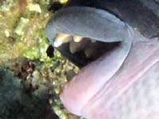

Синепёрый балистод
( Balistoides viridescens )
Спинорог без причины не нападает на ныряльщиков, но человека не боится, и при защите гнезда опасен. Зубы крепкие - раскусывает кораллы, морских ежей и крабов. На фото видны именно зубы, а не клюв, как у рыбы-попугая.
Большой спинорог обычно разыскивает в норках кораллов улиток, морских ежей, ракообразных. Если они хорошо спрятались, то спинорог легко отламывает кусочки коралла, расширяя доступ в норку. Когда он трудится, вокруг него роятся рыбы бабочки и спинороги помельче (вроде Пикассо ), которым достаются объедки.
Эту рыбу можно увидеть в глубине около вершины коралла. Фотографу повезёт, если спинорог будет плавать над массивом кораллов на глубине 1-1.5 м. Спинорог человека не боится, подпускает близко, и можно сделать фотографии с близкого расстояния.

Зубы